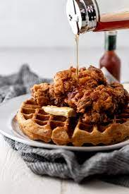

Chicken & Waffles

Description
This New York style chicken and waffle recipe is derived from the dish made
at the infamous Roscoes Chicken and Waffles
Ingredients
- Waffle Batter
- Chicken Wings
- Maple Syrup
- Black Pepper, Paprika, & Garlic Powder
- Eggs
- Flour
Steps
- Season raw chicken wings with listed spices
- Roll chicken in egg yolk, coat in flour, then fry until desired crispiness
- Mix waffle batter with water until desired consistency
- Insert waffle batter into waffle iron for ~2 minutes on each side
- Stack fried chicken on top of desired amount of waffles
- Pour maple syrup on top of chicken and waffles
- Enjoy